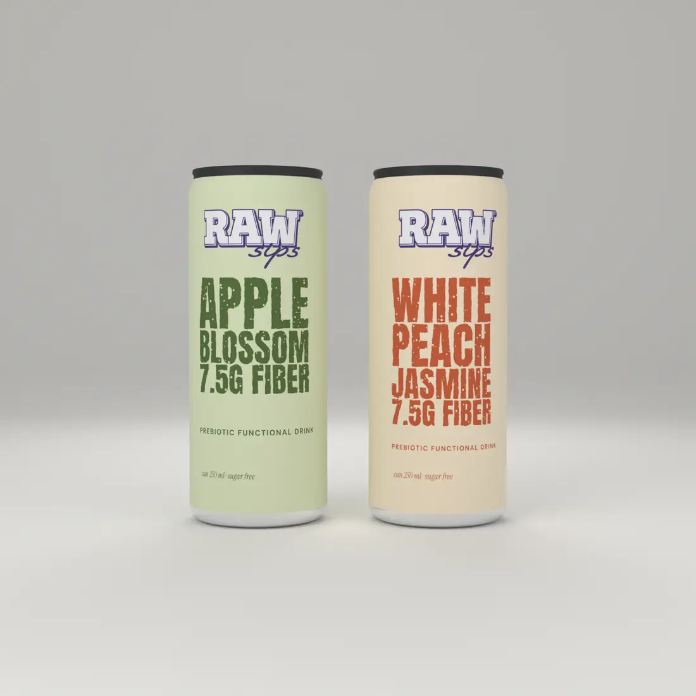
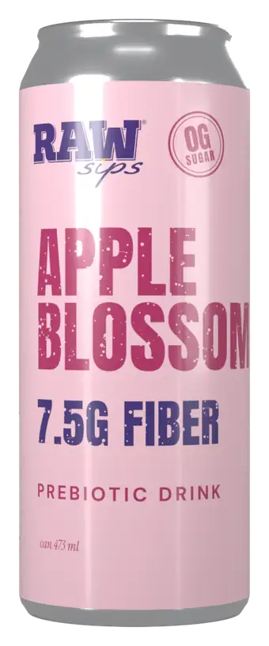
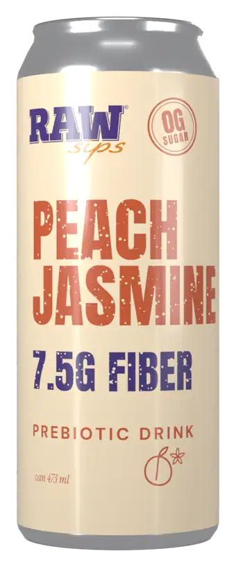

Prebiotic functional drink
7.5 g fiber · sugar free · 250 ml


Flavour 01
Crisp apple and soft blossom in a matte sage can, stamped big in deep green.

Flavour 02
Juicy white peach with a floral jasmine finish in a matte cream can with burnt-peach type.
The drink
A prebiotic functional drink with 7.5 g of fiber and no sugar, made to taste as good as it makes you feel.
Anyone who wants a drink that works for them, without the wellness clichés.
Bold stamped type on soft matte colour. Simple, honest, unmistakably RAW.
Brand
RAW Purple
#3D2A78
RAW White
#FFFFFF
Blossom Sage
#DCE4C2
Apple Green
#4E6B2A
Peach Cream
#F3E5CC
Burnt Peach
#C9562A
Matte Black
#1C1C1F · lid & tab
Studio Paper
#F2F1EE
Anton · stamped
Flavour names and fiber, stacked to equal width.
Instrument Serif
can 250 ml · sugar free
Small italic details.
DM Sans
PREBIOTIC FUNCTIONAL DRINK
Descriptor and label copy.